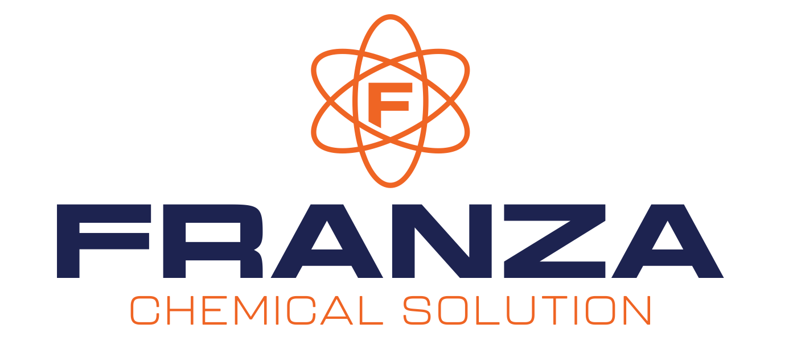
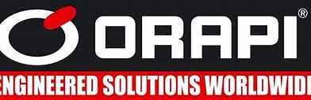
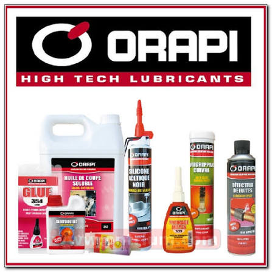
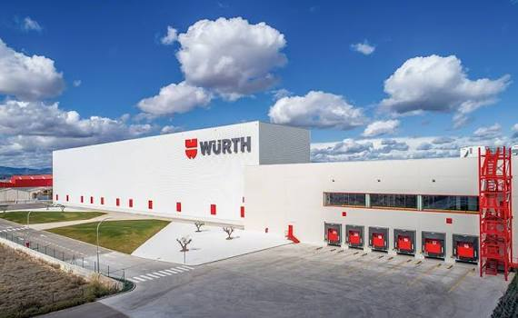

Marki w naszej ofercie
Nasza flagowa marka FRANZA — produkowana w Polsce — uzupełniona o dystrybucję sześciu renomowanych marek chemii technicznej i urządzeń dla przemysłu.

FRANZA Chemical Solution
Nasza własna marka chemii technicznej, produkowana w Polsce z myślą o profesjonalistach. Oferujemy szeroki asortyment środków czyszczących, smarów, preparatów konserwujących, sorbentów oraz chemii specjalistycznej.
Pełna kontrola nad recepturami pozwala nam dostarczać produkty o powtarzalnej jakości i tworzyć rozwiązania na specjalne zamówienie. Linia flagowa: SPILL MAT O&G Premium — maty sorbentowe do olejów i paliw.


Profesjonalne czyszczenie i utrzymanie ruchu
Orapi to francuski lider w produkcji specjalistycznych środków czyszczących, smarów i preparatów do utrzymania ruchu w przemyśle. Marka obecna w ponad 100 krajach na świecie.
Produkty Orapi znajdują zastosowanie w przemyśle spożywczym, motoryzacyjnym, transportowym oraz w zakładach produkcyjnych wymagających najwyższej jakości chemii technicznej. W Polsce marka reprezentowana jest przez ORAPI TRANSNET.

Chemia do mycia pojazdów i transportu
Transnet to marka z grupy ORAPI wyspecjalizowana w profesjonalnej chemii do mycia pojazdów ciężarowych, flot, taboru komunikacji miejskiej oraz maszyn budowlanych. Produkty pozwalają myć szybciej przy znaczącej oszczędności wody.
Formuły są biodegradowalne i bezpieczne dla mytych powierzchni — bez silikonu, amoniaku i agresywnych rozpuszczalników. Rozwiązaniom Transnet zaufali czołowi europejscy producenci i przewoźnicy.


Oleje silnikowe i przekładniowe
Mannol to niemiecki producent wysokiej jakości olejów silnikowych, przekładniowych, hydraulicznych oraz płynów eksploatacyjnych. Marka ceniona przez warsztaty i kierowców na całym świecie.
Pełna gama produktów dla motoryzacji osobowej, ciężarowej, motocyklowej i przemysłu. Doskonała relacja jakości do ceny.
Globalne rozwiązania dla utrzymania ruchu
NCH Europe to europejski oddział NCH Corporation — firmy z ponad 100-letnim doświadczeniem w produkcji chemii dla utrzymania ruchu, uzdatniania wody, gospodarki odpadami i konserwacji infrastruktury.
Produkty NCH Europe wyróżnia zaawansowana technologia i wysoka skuteczność. Wykorzystywane są w przemyśle produkcyjnym, energetyce, gospodarce komunalnej i wielu innych sektorach przemysłu.

Krajowy producent maszyn i urządzeń dla przemysłu i motoryzacji
Xton to polski producent maszyn i urządzeń dla przemysłu i motoryzacji. W ofercie m.in. myjnie warsztatowe i przemysłowe, urządzenia do regeneracji filtrów DPF oraz rozwiązania z zakresu automatyzacji.
Urządzenia Xton doskonale współpracują z chemią techniczną FRANZA — razem tworzą kompletne stanowiska mycia części i podzespołów.
Technika montażu i chemia techniczna
Würth to niemiecki koncern i światowy lider w dystrybucji techniki montażu, mocowania oraz profesjonalnej chemii technicznej dla warsztatów, motoryzacji i przemysłu. Marka obecna w ponad 80 krajach, ceniona za najwyższą jakość i niezawodność.
W ofercie m.in. profesjonalne preparaty czyszczące i odtłuszczające, smary, kleje i uszczelniacze, chemia w aerozolu oraz techniczne środki eksploatacyjne — rozwiązania, które doskonale uzupełniają naszą chemię FRANZA na stanowisku warsztatowym.
